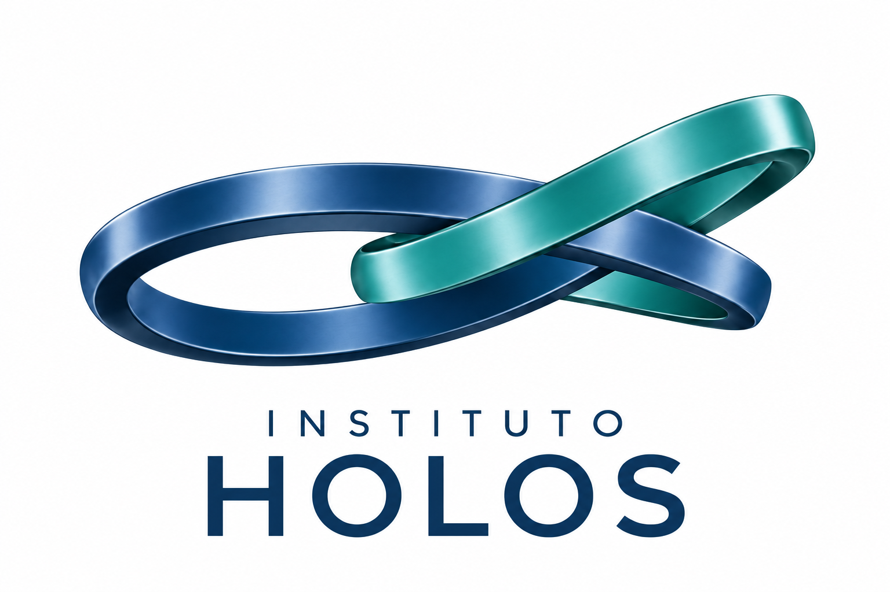

Formação e desenvolvimento
Cursos livres, formação continuada, capacitação e iniciativas de desenvolvimento de competências, conectando estudo, pesquisa e prática.
Uma proposta institucional para integrar formação, pesquisa e inovação, aproximando pessoas, instituições e campos do conhecimento.
Conheça o HOLOS Explore o PRESERVAR
HOLOS remete à palavra grega associada à ideia de todo, inteiro e totalidade. Essa perspectiva orienta a proposta do Instituto: conectar saberes e competências para compreender problemas complexos e desenvolver respostas fundamentadas.
A proposta reúne educação, pesquisa científica, desenvolvimento tecnológico e cooperação nacional e internacional, com abertura a diferentes áreas do conhecimento.
Integrar conhecimentos, desenvolver competências e construir caminhos para a inovação.
Rigor científico, transparência metodológica, rastreabilidade e independência na avaliação dos resultados orientam a estruturação dos programas. A evidência deve permitir revisar hipóteses, métodos e conclusões.
O Instituto encontra-se em estruturação institucional. As atividades serão implantadas conforme os requisitos e as autorizações aplicáveis.
Cursos livres, formação continuada, capacitação e iniciativas de desenvolvimento de competências, conectando estudo, pesquisa e prática.
Pesquisas básicas e aplicadas, métodos quantitativos, estudos ambientais e sociais, modelagem e análise de problemas complexos.
Desenvolvimento e avaliação de modelos, metodologias, software e soluções tecnológicas, incluindo ciência de dados e inteligência artificial.
Articulação de redes, projetos conjuntos, intercâmbio de competências e colaboração entre instituições brasileiras e internacionais.
Pesquisa contratada, estudos técnicos, análise de dados, capacitação e gestão de projetos em educação, ciência e inovação.
Eventos, publicações e ações de divulgação para aproximar a produção de conhecimento da sociedade e de seus desafios.
Ciência, territórios e resiliência.
Uma iniciativa em desenvolvimento que busca integrar conhecimentos, instituições e pessoas para a conservação da biodiversidade, a compreensão dos territórios e a resiliência diante dos desafios ambientais e climáticos.
Na arquitetura proposta, o Instituto HOLOS é a instituição fundadora e gestora do PRESERVAR, responsável pela articulação institucional e pela continuidade da iniciativa.
A proposta combina observação e experimentação em campo, integração de dados, modelagem e apoio à decisão. Os incêndios de vegetação e seus impactos constituem uma frente de investigação, inserida em uma agenda mais ampla de biodiversidade e sustentabilidade.
O Cerrado é apresentado como território de experimentação para conectar pesquisa, formação e inovação.
Observação, medição e experimentação para compreender ecossistemas e fenômenos territoriais.
Integração de fontes, análise de cenários e incertezas, simulação e produção de conhecimento.
Formação, cooperação e informações que possam apoiar gestores, pesquisadores e equipes em campo.
Pesquisa para a inteligência territorial e o apoio à decisão.
Aero-Q é a plataforma em desenvolvimento pela Quartzgroup Technologies LLC, apresentada como componente tecnológico da iniciativa PRESERVAR.
A trajetória proposta parte da pesquisa sobre ocorrência de incêndios e avança para a integração de dados, modelos especializados e ferramentas de análise. A visão de uma plataforma integrada depende de pesquisa, validação e desenvolvimento por etapas.
O PRESERVAR propõe uma articulação entre o Instituto HOLOS, a Quartzgroup Technologies LLC, o Instituto de Formação e Tecnologia (IFT) e a Techsol, com funções complementares em pesquisa, formação, desenvolvimento tecnológico e cooperação.
Aproximar pesquisadores e instituições em torno de problemas e projetos relevantes.
Definir objetivos, responsabilidades e métodos de trabalho, respeitando a autonomia científica.
Construir instrumentos de governança, financiamento e acompanhamento que sustentem a cooperação.
A cooperação internacional está em desenvolvimento. A participação de instituições e pesquisadores dependerá dos instrumentos próprios de cada colaboração.
Conheça a trajetória de Jucelio Pereira da Silva, responsável pela proposta do Instituto.